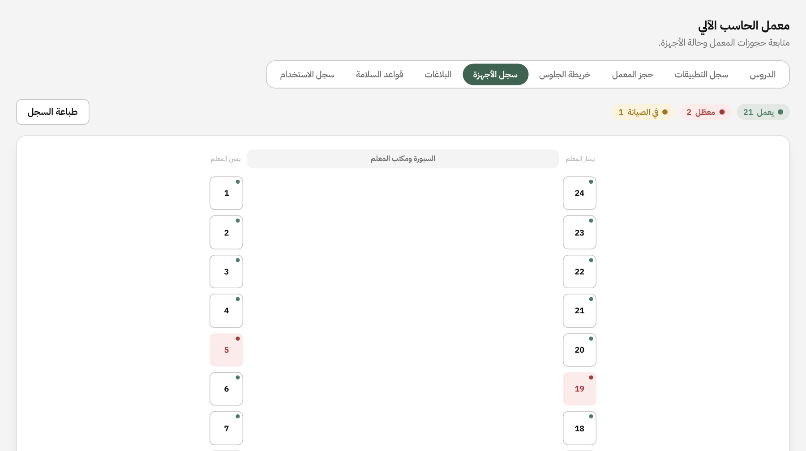
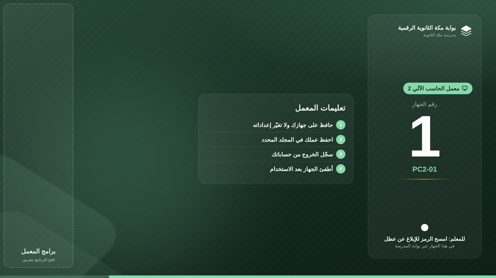
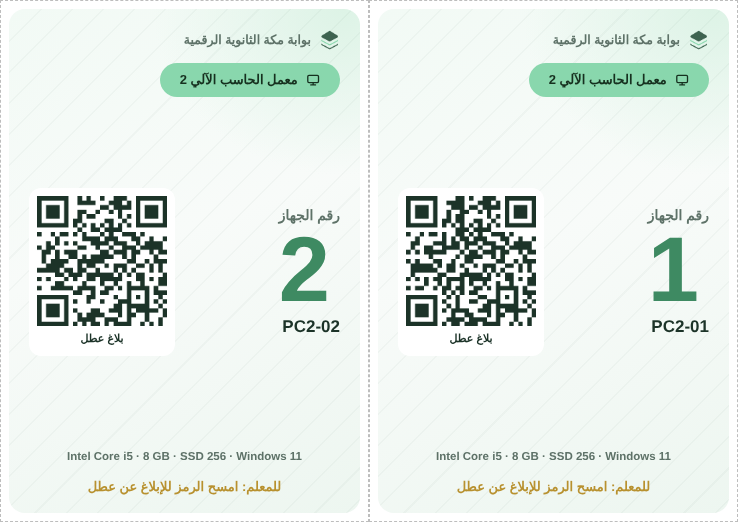
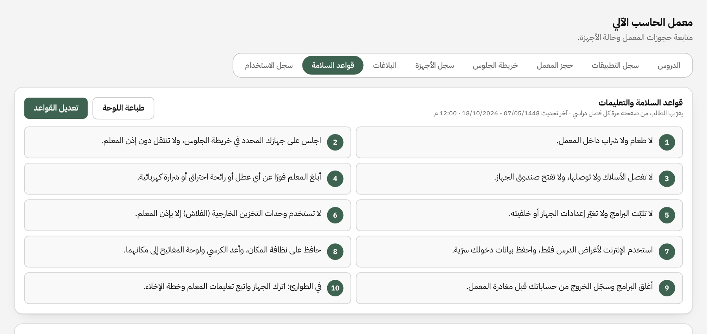
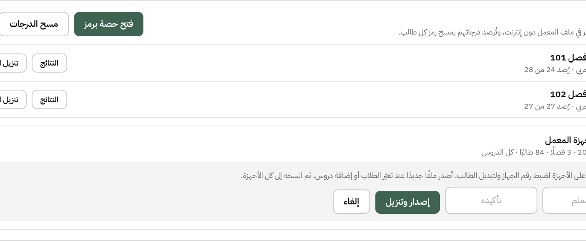
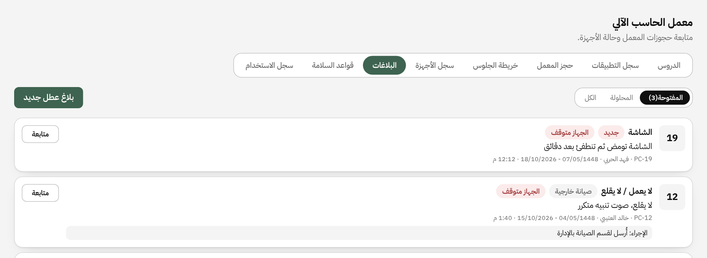
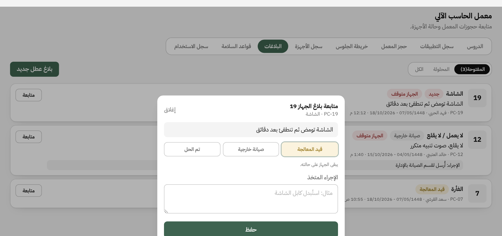
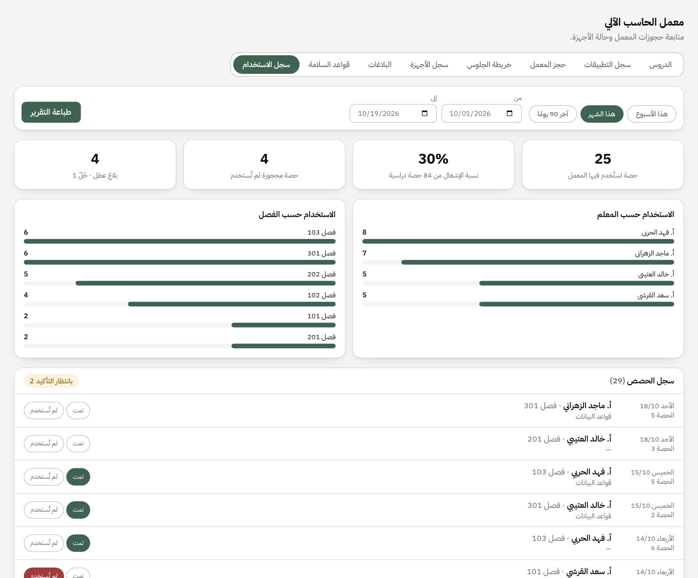

خطوات تجهيز المعملين مرة واحدة في بداية العام، ثم متابعتهما يوميًا. كل الشاشات من البوابة: القائمة «المعامل والمختبرات» ← «معمل الحاسب الآلي»، واختر المعمل 1 أو المعمل 2 من أعلى الصفحة.


خلفية بمنطقة اختصارات البرامج (يسار)

بطاقات الأجهزة

lab.html على كل جهاز مرة واحدة، فيه كل الدروس وأسماء الطلاب.lab.html.
C:\MakkahLab وانسخ إليه lab.html الخاص بمعمله بالاسم نفسه.file:///C:/MakkahLab/lab.html#seat=5seat= حسب الرقم على خلفية الجهاز: المعمل 1 من 1 إلى 24، والمعمل 2 من 1 إلى 21.lab.html الجديد فوق القديم في كل أجهزة معمله؛ الرموز بعده لا تعمل على الملف القديم.docs/lab-kiosk-setup.md).| الحساب | ماذا يرى الطالب | متى |
|---|---|---|
| حساب الدروس (Kiosk) | ملف المعمل وحده بملء الشاشة | حصص الدروس التفاعلية |
| تطبيق عملي | سطح مكتب بأيقونات البرامج وملف المعمل | التطبيق على البرامج، والاختبار العملي والإلكتروني |
| الأول الثانوي | حاسبة ويندوز، OneNote، Freeplane، Visual Studio Code ومتصفح |
|---|---|
| الثالث الثانوي | GanttProject، draw.io (نسخة سطح المكتب) |
C:\Users\Public\Desktop، ومعها اختصار ملف المعمل C:\MakkahLab\lab.html؛ فتظهر لكل الحسابات العادية.gpedit.msc): منع إدارة المهام، وموجّه الأوامر، وقائمة Run، وProhibit access to Control Panel and PC settings.C:\Users\Public\Desktop في كل جهاز، فيظهر أيقونة في حساب «تطبيق عملي».

